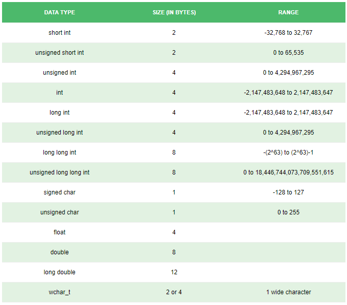

DATA TYPES In C++ Programming
All variables use data-type during declaration to restrict the type of data to be stored. Therefore, we can say that data types are used to tell the variables the type of data it can store.
Whenever a variable is defined in C++, the compiler allocates some memory for that variable based on the data-type with which it is declared. Every data type requires different amount of memory.
Data types in C++ is mainly divided into two types:
Primitive Data Types:
These data types are built-in or predefined data types and can be used directly by the user to declare variables.example: int, char , float, bool etc. Primitive data types available in C++ are:
- Integer
- Character
- Boolean
- Floating Point
- Double Floating Point
- Valueless or Void
- Wide Character
Abstract or user defined data type:
These data types are defined by user itself. Like, defining a class in C++ or a structure.This article discusses primitive data types available in C++.
Integer: Keyword used for integer data types is int. Integers typically requires 4 bytes of memory space and ranges from -2147483648 to 2147483647.
Character: Character data type is used for storing characters. Keyword used for character data type is char. Characters typically requires 1 byte of memory space and ranges from -128 to 127 or 0 to 255.
Boolean: Boolean data type is used for storing boolean or logical values. A boolean variable can store either true or false. Keyword used for boolean data type is bool.
Floating Point: Floating Point data type is used for storing single precision floating point values or decimal values. Keyword used for floating point data type is float. Float variables typically requires 4 byte of memory space.
Double Floating Point: Double Floating Point data type is used for storing double precision floating point values or decimal values. Keyword used for double floating point data type is double. Double variables typically requires 8 byte of memory space.
void: Void means without any value. void datatype represents a valueless entity. Void data type is used for those function which does not returns a value.
Wide Character: Wide character data type is also a character data type but this data type has size greater than the normal 8-bit datatype. Represented by wchar_t. It is generally 2 or 4 bytes long.
Datatype Modifiers:
As the name implies, datatype modifiers are used with the built-in data types to modify the length of data that a particular data type can hold. Data type modifiers available in C++ are:- Signed
- Unsigned
- Short
- Long
Below table summarizes the modified size and range of built-in datatypes when combined with the type modifiers:

*Note :
Above values may vary from compiler to compiler. In above example, we have considered GCC 64 bit.We can display the size of all the data types by using the size_of() function and passing the keyword of the datatype as argument to this function as shown below:
|
Output:
|
Size of char : 1 byte Size of int : 4 bytes Size of short int : 2 bytes Size of long int : 8 bytes Size of signed long int : 8 bytes Size of unsigned long int : 8 bytes Size of float : 4 bytes Size of double : 8 bytes Size of wchar_t : 4 bytes |
typedef Declarations:
You can create a new name for an existing type using typedef. Following is the simple syntax to define a new type using typedef -
| typedef type newname; |
For example, the following tells the compiler that feet is another name for int -
| typedef int feet; |
Now, the following declaration is perfectly legal and creates an integer variable called distance -
| feet distance; |
Enumerated Types:
An enumerated type declares an optional type name and a set of zero or more identifiers that can be used as values of the type. Each enumerator is a constant whose type is the enumeration.Creating an enumeration requires the use of the keyword enum. The general form of an enumeration type is -
| enum enum-name { list of names } var-list; |
Here, the enum-name is the enumeration's type name. The list of names is comma separated.
For example, the following code defines an enumeration of colors called colors and the variable c of type color. Finally, c is assigned the value "blue".
| enum color { red, green, blue } c; c = blue; |
By default, the value of the first name is 0, the second name has the value 1, and the third has the value 2, and so on.
But you can give a name, a specific value by adding an initializer. For example, in the following enumeration, green will have the value 5.
| enum color { red, green = 5, blue }; |
Here, blue will have a value of 6 because each name will be one greater than the one that precedes it.